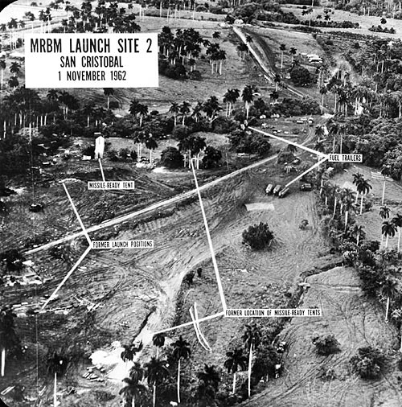
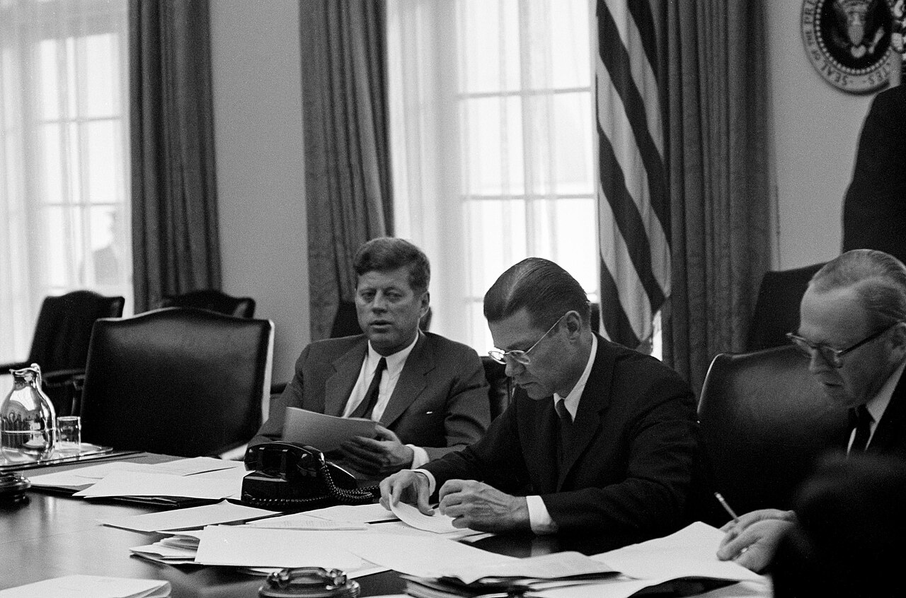
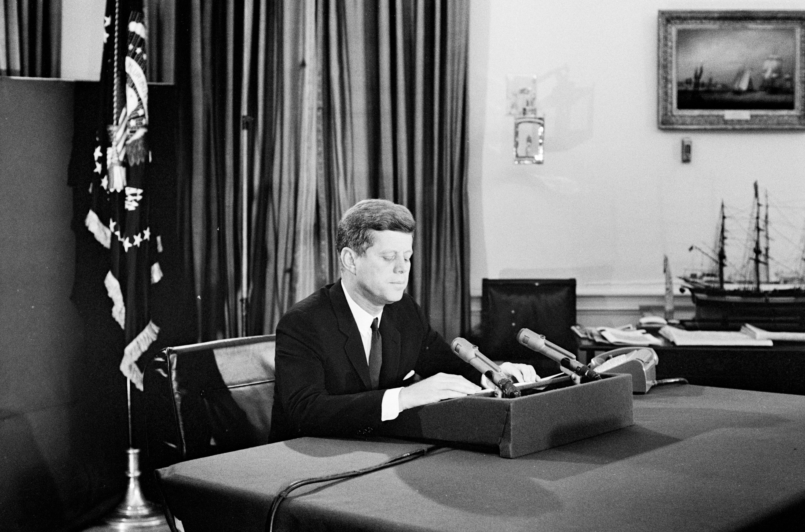
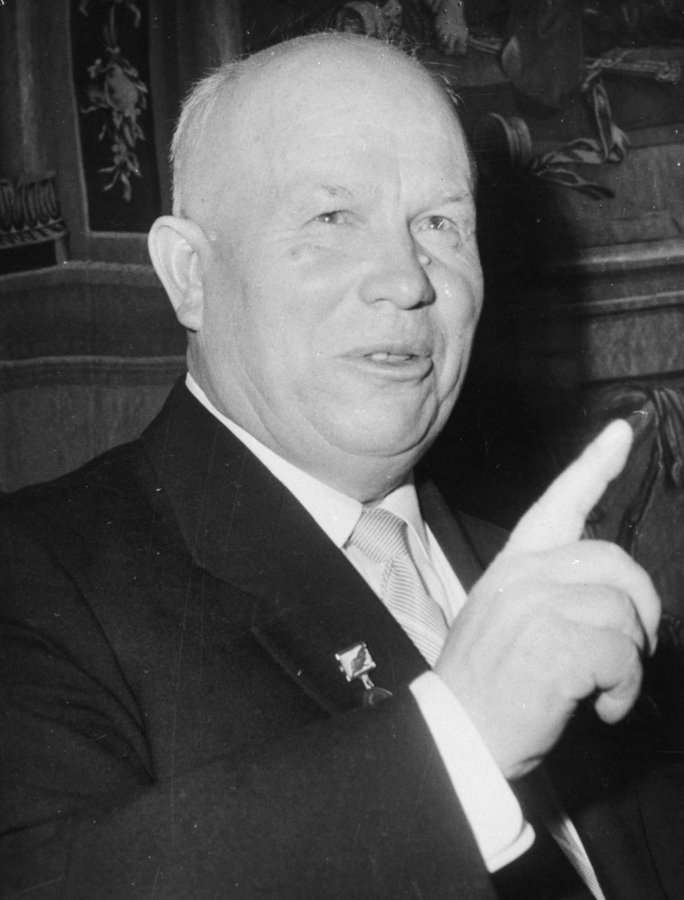
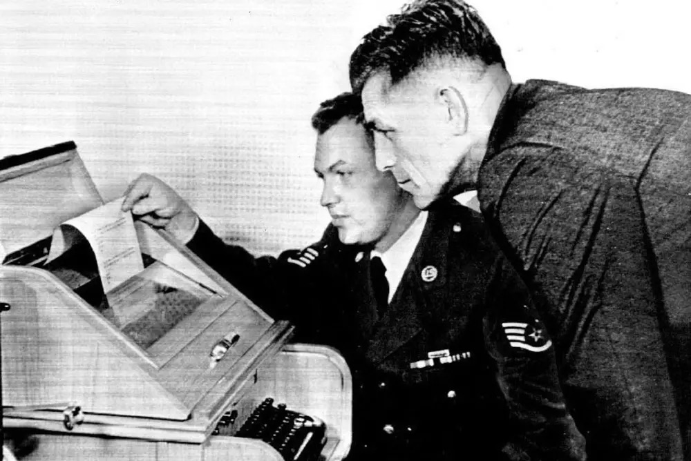

The Cuban Missile Crisis revealed how dangerous miscommunication between nuclear superpowers could be, and it directly led to major reforms in communication and diplomacy between the United States and the Soviet Union, including the creation of the Washington–Moscow hotline and long-term changes in crisis management during the Cold War.
In 1959, Fidel Castro overthrew Batista and built a communist government just 90 miles from America, aligned with the Soviet Union. This was during the Cold War, a period of extreme tension between the two superpowers.
In 1962, the Soviets secretly installed nuclear missiles in Cuba. American U-2 spy planes detected the missile sites under construction that October, triggering a tense thirteen-day confrontation between Washington and Moscow.
The crisis grew directly out of Cold War rivalry, the Cuban Revolution, and the failed Bay of Pigs invasion. These events pushed the Soviets to place missiles within striking distance of the United States.

Kennedy learned of the missiles from U-2 photographs. The famed "thirteen days" ran from October 16, when he first saw the evidence, to October 28, when Khrushchev publicly agreed to remove the weapons. The danger did not fully pass until the blockade was lifted on November 20. On October 22, 1962, Kennedy announced a naval "quarantine" of Cuba, calling it that to avoid the legal and diplomatic implications of an act of war if he were to call it a "blockade".
For thirteen days the world balanced on slow, indirect messages passed between Kennedy and Khrushchev. The danger of this crisis was not just the nuclear weapons each side had placed near their respective enemy's borders, but rather the lack of clear and reliable communication between the two world leaders, and their troops.
Because no fast, direct line to Moscow existed, Kennedy was forced to talk through a sprawling web of intermediaries. He debated options with his Executive Committee (ExComm), consulted former president Eisenhower, telephoned British Prime Minister Macmillan, and relied on the United Nations' acting secretary-general as a go-between.
The letter was the first in a series of direct and indirect communications between the White House and the Kremlin throughout the remainder of the crisis.— U.S. Dept. of State, Office of the Historian
…the forces under my command are ordered…to interdict…the delivery of offensive weapons…to Cuba.— Proclamation 3504, J.F. Kennedy, Oct. 23, 1962
Kennedy and Khrushchev, and their advisers, struggled throughout the crisis to clearly understand each others' true intentions, while the world hung on the brink of possible nuclear war.— U.S. Dept. of State, Office of the Historian

In a televised address, Kennedy informed the American people of the missiles, condemned the Soviet move as deceptive, and spoke directly to Khrushchev. In his address, he demanded the weapons be withdrawn.
It is difficult to settle or even discuss these problems in an atmosphere of intimidation.— J.F. Kennedy, Oct. 22, 1962
We are prepared to discuss new proposals for the removal of tensions on both sides…— J.F. Kennedy, Oct. 22, 1962
I call upon Chairman Khrushchev to halt and eliminate this clandestine, reckless and provocative threat to world peace.— J.F. Kennedy, Oct. 22, 1962

Khrushchev framed the missiles as a defensive measure, protecting Cuba after the Bay of Pigs invasion. His letter pressed urgently toward avoiding nuclear war and proposed a path to de-escalation.
If, however, you have not lost your self-control… then it is evident that nothing else is left to us but to accept this challenge of yours.— N. Khrushchev, Oct. 26, 1962
We have proceeded and are proceeding from the fact that the peaceful co-existence of the two different social-political systems… is necessary.— N. Khrushchev, Oct. 26, 1962
Let us take measures to untie that knot.— N. Khrushchev, Oct. 26, 1962
A day later, a second, tougher letter arrived. This one demanded that the U.S. withdraw its own missiles from Turkey. Each side believed that their own weapons were a defensive measure and acceptable, but treated those of their enemy as aggressive acts of war.
You are disturbed over Cuba…But Turkey adjoins us.— N. Khrushchev, second letter, Oct. 27, 1962
A private meeting between the Soviet ambassador and President Kennedy broke the stalemate, as it signaled that the U.S. would, in time, remove its Jupiter missiles from Turkey. The formal letters sent were severely delayed, which made accurately communicating impossible. The real resolution was through direct, informal contact between representatives of each side. The crisis showed how slow communication increased tensions, while direct communication between the two countries was what deescalated the conflict. This lesson is what led to later reforms, whose effects are still seen today.

The crisis exposed a terrifying flaw: in an age of nuclear weapons, the superpowers had no fast, direct way to talk. The answer was the "Hot Line". It was a direct communications link letting leaders reach each other in minutes, not days.
During the crisis, a single message from Khrushchev had to be encoded, transmitted, and translated before it could even be read. This process could take many hours, delaying when Kennedy would be able to read the message. In such a confrontation, where fast communication is vital, that lag could have proved catastrophic for relations between global superpowers. The Hot Line was designed to close exactly that gap.
The Cuban missile crisis of October 1962 compellingly underscored the importance of prompt, direct communication between heads of state.— Hot Line Memorandum of Understanding, U.S. Dept. of State
Included was establishment of communications links between major capitals to ensure rapid and reliable communications in times of crisis.— Hot Line Memorandum of Understanding, U.S. Dept. of State

The effects of the changes made after the crisis are still seen to this day. The Hot Line was upgraded from undersea cables to satellites for greater speed and reliability. It proved its worth years later, during the 1967 Arab–Israeli War.
What began as a near-catastrophe became a lasting framework for managing the most dangerous moments of the Cold War.
Nixon today announced formal approval of two agreements…aimed at modernizing the Washington-Moscow hotline and reducing the risk of accidental nuclear war.— Spokane Daily Chronicle, 1971
The hotline has been used only once, during the 1967 Arab-Israeli war.— Spokane Daily Chronicle, 1971
The deeper significance of this crisis lies in the reforms it brought. The missiles were removed within weeks, but the change in how the superpowers communicated outlasted the crisis by decades. A reaction born of fear produced a permanent reform. Neither side technically won, but both ended up benefiting from a reliable system for talking before the shooting could start.